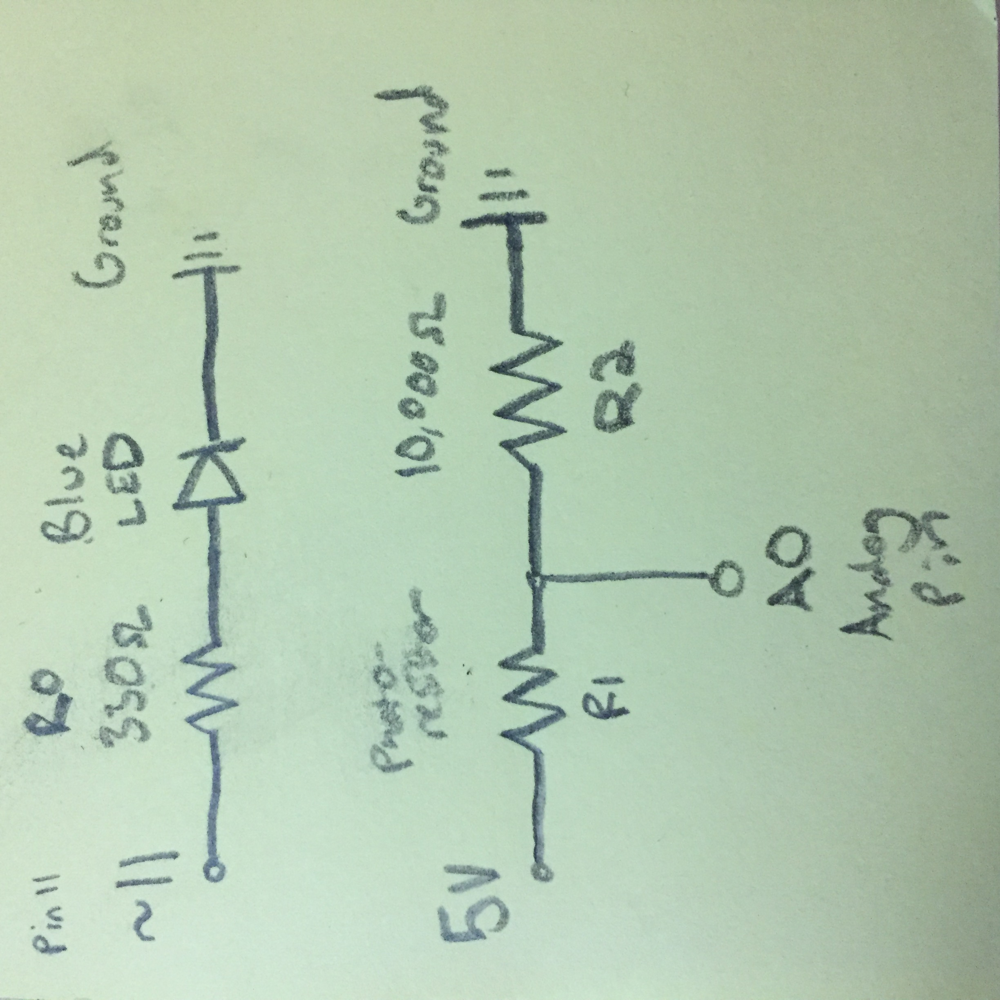

Schematic

Image 2. A schematic of the LED x Photoresistor circuit.
The blue LEDs is using a 330 ohm resistor. Given a 3.2 voltage drop, and V=IR, 5-3.2=x*330, we have a current of 12mA,which is safe for the LED.
The photoresistor works alongside a 10k ohm resistor. This allows there to be a small amount of current without preventing data from being read by our A0 pin.
The voltage recorded by the analog read at the voltage divide (the wire going to pin A0), is dependent upon the photoresistor's light input.
That voltage can be calculated by finding the current across both resistors...
V = I*(R1+R2)
5 = I*(R1+10,000)
5/(R1+10,000) = I
and then calculating the voltage remaining after R1 and before R2...
Vout = Itotal*R2
Vout = (5*10,000)/(R1+10,000)
Vout = 50,000/(R1+10,000)
where R1 is dependent upon the amount of light it is receiving. This value of voltage is important for our code, as we will map it to the brightness of our LED.
Circuit
 Image 3. The final circuit, with a blue LED, a 330 ohm resistor, a photoresistor, and a 10k ohm resistor.
Image 3. The final circuit, with a blue LED, a 330 ohm resistor, a photoresistor, and a 10k ohm resistor.
Code
//initializes pin modes
void setup() {
//sets digital pin 12 as our led output
pinMode(11, OUTPUT);
//sets analog 0 to be our sensor input
pinMode(A0, INPUT);
//sets the baud rate for the serial monitor and enables said monitor
Serial.begin(9600);
}
//listens for changes in voltage and affects the led accordingly
void loop() {
//provides a constant read-out of the unfiltered sensor value
Serial.println(analogRead(A0));
//lowest read A0 value = 370, (370 x .049 = 1.813 Volts)
//highest read A0 value = 730, (730 x .049 = 3.577 Volts)
//constrains the sensor values to more accurately reflect possible voltage reads
int sensorVal = constrain(analogRead(A0),380,720);
//maps sensed darkness with brighter led output and brightness with dim led output
int outputVal = map(sensorVal, 720, 380, 0, 255);
//outputs to the led depending upon the brightness sensed
analogWrite(11, outputVal);
}
Circuit Operation
 Image 4. The circuit operating such that the blue led becomes darker as the photoresistor picks up more brightness, and brighter as the resistor senses less brightnes.
Image 4. The circuit operating such that the blue led becomes darker as the photoresistor picks up more brightness, and brighter as the resistor senses less brightnes.